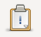

|
Afin d'exécuter une tâche, cliquez sur le bouton  ce trouvant dans la barre d'outils. Le panneau de gestion des tâches va alors apparaitre :
Sélectionnez la tâche que vous souhaitez exécuter. Le panneau de contrôle d'éxécution de la tâche va alors s'ouvrir. Cliquez sur le bouton "Démarrer" afin de lancer l'éxecution de la tâche :
Une fois la tâche terminée, deux nouveau panneaux vont apparaitre :